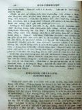

Languages
台文
｜
中文
｜
日本語
｜
English
字體
小
｜
中
｜
大
首頁
/
白話字數位典藏
白話字數位典藏全文檢索
查詢模式
選擇年代
清國時代(1885-1895)
日本時代(1895-1945)
戰後(1945-1969)
1885-1895
1896-1905
1906-1915
1916-1925
1926-1935
1936-1945
1946-1955
1956-1965
1966-1969
1970-1980
1980-1990
1990-2000
2000-2010
2010-
選擇文類
詩
散文
小說
戲劇
傳記
選擇作者
陳清忠
陳清義
編輯部
柯設偕
吳天命
明有德
偕叡廉
周天來
劉華義
王守勇
林茂生
陳添旺
王占魁
柯維思
賴仁聲
陳瓊琚
雪峰逸嵐
吳清鎰
郭水龍
蕭樂善
許水露
葉金木
陳金然
章王由
廖得
鄭連坤
潘道榮
楊士養
梁秀德
劉約翰
周淑慧
高金聲
林燕臣
黃六點
蔡愛義
許有才
主筆
巴克禮
陳鳩水
郭朝成
張基全
陳明清
陳能通
拾穗生
顏振聲
卓恆利
傳道局
胡文池
劉主安
鄭兒玉
陳旺
潘金聲
鐘天枝
Google Search
Yahoo Search
全部
刊名
標題
標題(教羅)
全文
全文(教羅)
作者
第95頁，共141頁(共2,805筆資料) 0.650071144104sec
1
...
93
94
95
96
97
...
141
To Page
GO
文字列表
圖文列表
排序
日期
文類
刊名
作者
影像
[1925-10 芥菜子 文類-散文 作者-陳清忠/Tân Chheng-tiong ]
(4)
湯匙Ê時代 [ THNG-SÎ Ê SÎ-TĀI ]
湯匙Ê時代 佇正月時為著食siuⁿ濟會害嘴齒ê物，致到嘴齒疼。父母teh欲chhōa in ê囝兒去找齒科醫ê時的確袂免得無想，也奇怪講：遐个無文明ê野蠻人，怎樣袂予嘴齒疼來苦楚in。野蠻ê人無倚靠刀仔á是別項物，in會食真碇ê肉－這實在是為難ê事－。人講按呢反轉予in ê嘴齒不時勇健。刀仔以及別款ê器具，á是料理術，強強teh欲予人變做無嘴齒ê動物。真濟款ê嘴齒病，野蠻ê人kap in攏毋相識；獨獨文明&...
[1925-10 芥菜子 文類-散文 作者--/-]
(3)
教會自養 [ KÀU-HOĒ CHŪ-IÓNG ]
教會自養 教會自養，就是自然應盡ê天職。台灣教會建設到taⁿ有60外年，若無進行到自養ê日，實在真見笑，也是無盡基督徒ê本份。若欲做純萃ê台灣基督教會，tio̍h有家己自養自立；親像人到長成，的確著有自養，thang建立家庭；毋thang koh倚靠父母。咱毋thang干但專倚靠母會teh幫贊，著有自養ê精神chiah合宜。Ài欲自養，要緊著有3項：－ 1. 培養人才。教會欲得著自養，要緊財政著有夠額。財政是對佇會友ê事業kap程度ê增差thang得著。會友ê程度...
[1925-10 芥菜子 文類-散文 作者-陳旺/Tân Ōng]
(2)
信用kap道德 [ SÌN-ĒNG KAP TŌ-TEK ]
信用KAP道德 這2句話人不時teh講：續掠做平常話；其實是包天包地、包山、包海，講也盡；也是親像人ê腳手，若無平平，講是長短跛腳、跛手。按呢算是無完全ê人，真歹看，想倒轉著替伊可憐，kiám-chhái是父母生成；調查詳細，毋是，父母真完全；來kā伊研究，總無是天性；毋過天性to是純全--ê，ai-ah！按呢thang 判決自作孽、不受教，無冤枉lah！ 道德是地基，信用著合宜、合時來用。前年新聞有講3句話：－大信用，大死；小信用，小死；攏無信用，攏無死－其實有影，今年ê事若定。遐个失敗者kap受關監&e...
[1925-10 芥菜子 文類-散文 作者-潘金聲/Phoaⁿ Kim-seng]
(3)
讀報所感 [ THA̍K PÒ SÓ͘ KÁM ]
讀報所感 讀貴報「芥菜子」ê創刊號，內容豐富，koh有津津有奇；真受感激！ 中間讀著陳溪圳陳芳本兩位老先生ê文法袂免得真同情。二位先生為著教會對宗教教育這方面ê觀念真稀微koh幼稚，真正tū戽萬丈ê氣焰，無毋是欲予教會對宗教教育kap宣教ê機關有平等ê態度： 後來若果然得著當局諸位、牧師；傳道師及長執會友ê贊成實施，就毋若北部、南部ê教會也實在會加添大大ê幸福。咱ê宗教教育經營施設ê名稱就是號做主日學á是日曜學校；想彼个意思，攏無表...
[1925-10 芥菜子 文類-散文 作者--/-]
(3)
慈愛Ê結子（聖誕è故事） [ CHÛ-ÀI Ê KIAT-CHÍ (Sèng-tàn è kò͘-sū) ]
慈愛Ê結子（聖誕è故事） 「玫瑰花、玫瑰花，啥人欲買我ê玫瑰花？」一个媠媠ê查某囡仔，發出輕輕細細ê聲；穿真破ê衫褲，用軟弱ê手捾一跤破籃，té濟濟欲謝欲謝ê花，看伊瘦瘦ê面，kap兩支路糊糜ê跤，就知伊是喪鄉失調養，無得著快樂趣味--ê。徛佇路邊teh閃避青冷ê北風。街路ê人穿長袍皮裘，尚且teh叫koaⁿ-á！koaⁿ-á！若是。這个查某囡仔予無情ê冷風吹到gī-gī-chh...
[1925-10 芥菜子 文類-散文 作者-陳清忠/Tân Chheng-tiong ]
(2)
死神 [ SÍ SÎN ]
死神 下面所記ê，就是英國ê大詩人Geoffray Chaucer (1340-1400)所寫ê詩〈The Canterbury Tales〉ê中間ê一个故事。佇Canterbury ê所在有這个神社叫做St. Thomas，常常有濟濟巡禮ê人去遐參拜。大家佇路中相kap行，無聊，就相替講故事來安慰女眾。這个故事猶原是遐个巡禮者中ê一個所講--ê。 讀這个故事，ǹg望咱會得著多少ê教示。有三個少年人，一暗坐佇酒店teh博賭，聽見有鐘ê聲，就伸in &e...

[1925-10 芥菜子 文類-散文 作者-陳能通/Tân Lêng-thong]
(5)
科學雜略(空氣) [ KHO-HA̍K CHA̍P-LIO̍K (KHONG-KHÌ) ]
科學雜略 空氣 看見草木ê枝葉teh搖來搖去，咱就知有風teh吹。靜靜無風ê時，咱若用手á是扇佇空中趕緊來拽，也thang知有啥物觸著咱ê皮膚。Koh這項就是人用鼻孔teh呼出吸入空中ê物無一秒間有歇睏。Taⁿ空中彼項物，咱kā伊號做空氣。這是逐人所識ê常識。 空氣是包圍佇地球水陸兩界ê表面上，無論叼位一孔、一隙to是伊所佔領ê王國。雖然是按呢，伊ê存在ê範圍毋是無限ê。 空氣包圍佇地球ê表面上chiah有20外英哩（mile）&...
[1925-10 芥菜子 文類-散文 作者-鐘天枝/Chiong Thian-ki]
(3)
向學心 [ HIÒNG-HA̍K SiM ]
向學心 一般ê人怎樣會生起向學ê心肝，是因為時勢逼in著按呢。時勢逼人是若天氣，親像詩篇19章2節到4節所講日隔日講出聲，暝過暝報人知。In無聲也無話； in ê聲色聽袂見。伊ê聲音到thong世間。伊ê話傳到地ê盡頭。 天氣雖bóng無出聲，猶久會逼人著改衣服。所以熱天若到，毋免貼單廣告，人家己自然ài褪去綿裘，換熱衫；若毋換ê人就是。身軀的確有增差。今仔日時勢逼人著向學也是按呢，設使若無向學，就是伊ê思想kap時勢有大各樣。Kiám-chh&...
[1891-5 臺灣府城教會報 文類-散文 作者--/-]
代先升天無失落 [ Tāi-seng seng Thian bô sit-lo̍h ]
代先升天無失落1891.05 第73張 p.34 西國有一個讀冊人，生兩個囝，一查甫，一查某。查某大查甫--ê兩歲；大姊小弟十分ê相疼，父母看見歡喜，無拍算查某囝七歲就死。彼時查甫--ê只有五歲，查某--ê既然死，父母不止傷心；彼个查甫--ê無看見伊-ê大姊亦是一樣ê憂悶。後來照規矩埋葬出山；有一日讀冊人chhoā彼个查甫囝去山裡栽花種樹；到墓裡彼个小弟無看見伊-ê大姊，四界teh揣，老父就kā伊講，「囝 ah，beh見你ê姊妹，見袂著lah」。查甫囡仔聽見這話出聲大哭，想伊ê姊妹已經失落。伊ê父就kā伊安慰講：「你ê姊妹毋是失落，是beh閣活，ē閣相見，現在不過代先上去天堂nā-tiāⁿ」...
[1891-7 臺灣府城教會報 文類-散文 作者--/-]
玉皇，天后，城隍ê來歷 [ Gio̍k-hông,Thian-hō͘,Sêng-hông ê lâi-le̍k ]
玉皇，天后，城隍ê來歷1891. 7 第七十五張 p.51-52 查考宋朝ê史記，玉皇出世佇漢朝尾，姓張名儀，就是真定府行唐縣ê人；伊對細漢學習老君 ê教，隱居佇武當山採藥煉丹醫治病人。到宋朝徽宗ê時，有司公林靈素亦學習老君 ê教；伊用白賊話騙聖上。徽宗受伊ê 迷惑，就策封張儀做玉皇上帝，向望伊保佑國運久長；若是對策封張儀ê了後，無偌久徽宗父子，大某，細姨攏予金國 ê人掠--去，受凌辱極慘，死佇五國城。Hāiⁿ ah！對古早虔心敬玉皇ê人，毋值著徽宗ê實心:若是伊喪失國，紲失落身軀。玉皇怎樣無救伊ah！今敬玉皇ê人著掠這來做鑑戒。天后就是興化府莆田縣 ê人，林--氏ê 查某囝；家世sòng-...
[1891-8 臺灣府城教會報 文類-散文 作者--/-]
嫁娶著好規矩 [ Kè chhoā tio̍h hó kui-kí ]
嫁娶著好規矩1891.8 第七十六張 p.58 凡若做耶穌ê學生著較各樣眾人，著趁真實，毋通趁世俗，因為咱佮世俗人無相同。世俗有相爭相冤，毋是怨恨人，其實是怨恨咱無趁世俗，無合in ê心nā-tiāⁿ。耶穌講「恁應我無屬佇世間，所以世間人怨恨恁。」按呢做耶穌 ê學生徛起這世間無予歹風俗拍亂，無予私欲迷--去，這chiah是合道理；看I約翰5:5，有講："Chī-chuī-á ē 較贏世俗？獨獨信耶穌做上帝ê囝 ê人ē。」親像娶某鬧新娘房，本是無合道理ê事，所以屬主ê人猶過袂曉脫離這號歹樣，是毋對。男女配合是人ê大人倫，賀喜ê人毋是親戚就是朋友，攏歡喜in teh嫁娶，相親相疼。當hit時人客...
[1891-8 臺灣府城教會報 文類-散文 作者--/-]
老母替囝死 [ Lāu-bó thè kiáⁿ sí ]
老母替囝死1891.8 第七十六張 p.58 舊金山佇美國ê西爿，出金第一濟。美國東爿ê百姓起頭聽著金山出金ê消息，一時人心pho̍k-pho̍k-chhéng，逐人攏想愛到西爿去發財。內中有一人放拺伊ê某囝佇厝裡，單身去金山掘金。Beh起身佮伊ê某囝約，若掘著金發財，就beh寫批請in某囝去。無料去真久攏無音信，伊ê某佇家內萬分ê著急；因為無通知伊ê丈夫死á活。後來接著伊丈夫ê批，講：伊已經發財lah，請伊ê某囝趕緊搭船去。伊ê某接著批歡喜到極，趕緊chhoā伊ê細囝到紐約買船票搭貨船beh去金山佮伊ê丈夫相會。Hit隻船駛到大海中，忽然船中發火，通船ê人驚到跤浮手sih，知船內有濟濟火藥...
[1891-9 臺灣府城教會報 文類-散文 作者--/-]
論上帝註定ê時 [ Lūn Siōng-tè chù-tiāⁿ ê sî. ]
論上帝註定ê時(翻譯英國新聞報。)1891.9 第 77張 p.67~70 約翰2:4 記主耶穌ê話講：「我ê時猶未到」。擱記兩koè，講：「因為伊ê時猶未到，所以無人掠伊。(約翰7:30 ； 8:20)」。到後來擱記，「耶穌知伊ê時到」(約翰 13:1)；擱siāng hit ê昏耶穌也祈禱，講：「父ah，時到lah」(約翰17:1)。今chit-ê時是甚麼？就是上帝註定ê時，予一世人ê遭遇，不論歡喜憂悶，拖磨苦痛攏是配到拄拄好。Ē得顯明上帝ê榮光，這正是基督終身要緊ê事業。第一重 ê時候就是佇髑髏予人釘死hit-tia̍p，所以teh講起「伊ê時猶未到」，較常是指佇 chit-ê 代誌。...
[1891-11 臺灣府城教會報 文類-散文 作者--/-]
買魚毋免錢 [ Bē-hî m̄-bián chîⁿ ]
買魚毋免錢1891.10 第 78章 p.75~76 佇阮祖家有一个牧師teh傳道理真正熱心；常常家己煩惱。伊所講ê道理親像無盡力，chiah 予人無beh信伊。有一日去佇拜堂，猶原是這个款式。伊所講ê話人kā掠做無要緊；所以對禮拜堂倒--來不止鬱卒，家己 teh想世間各項事亦攏是按呢。湊巧佇街路頭拄著一个賣魚--ê。就問伊講，近來有生理 á無？伊講，無，今仔日攏無人買。牧師擱問伊講，這擔魚beh 賣偌濟錢？賣魚--ê kā伊講幾圓。牧師就攏 kā伊買，續講，Chiah-ê魚我家己攏無要用，我毋tihN8，你著擔去大路，大聲kā人講，有兩尾魚beh 予人，恁若愛，就來提。賣魚--ê講，按呢，...
[1892-1 台南府教會報 文類-散文 作者--/-]
論教會報 [ Lūn Kàu-hoē-pò ]
論教會報1892.1 第 81 卷 p.3 凡關心teh做生理 ê人，的確愛知各港口出入ê貨件，各埠頭當銷ê物，以及起落ê行情，想安怎樣通從中取利；何況關心佇教會ê兄弟姊妹kiám無愛看會報知各教會ê情境，看有甚乜通利益本身勉勵別人。人ê身軀跤手喙目百體各有路用，所以ē活動鬥搭，是倚靠腦髓通報各部位，予伊知通振動出力；教會報也通借比是教會ê腦髓，kiám毋著對重？今將彼个路用排列tī下面:－1. 教會報會結聯各位遠近ê教會親像一家。教會ná設ná開闊，聖徒愈久愈加添。聖徒ê境遇不同，所結ê果子也各樣。人不論踮佇佗位，所看所聽逐項事，不過是近附四位ê消息nā-tiāⁿ；愛知較遠教會ê情形，著對...
[1896-3 台南府城教會報 文類-散文 作者--/-]
論請牧師 [ Lūn Chhiáⁿ Bo̍k-su ]
論請牧師1896.03 132 卷 P20-21 (大會ê 紀錄猶未通印佇遮，著後張ê 教會報chiàⁿ beh 印。 Taⁿ 將一項要緊ê 代志先通知恁。 大會有議論請牧師ê 條款，後來託仗幾nā人將所議論定著ê 來記，通回覆Hō͘大會准。 Taⁿ將大會所定著ê條款印佇遮予恁大家知。請逐所在教會ê兄弟姐妹去想，saⁿ-kap求上帝saⁿ-kap鼓舞勉勵；向望無偌久幾nā位ê教會請牧師去toà tī in中間。) 若會得thang 一所在請一个牧師是較好；若無氣力就幾nā位附近ê教會 通合做伙請。總是毋通傷濟位。論所費是定著牧師ê薪金攏著本地教會擔當。薪金自然著較濟傳道先生ê。 在唐山上少...
[1896-5 台南府城教會報 文類-散文 作者--/-]
論Thái-ko [ Lūn Thái-ko ]
論Thái-ko(看利未記 13, 14 章).1896.05 134卷 p.38-39 佇以色列ê百姓ê中間有時有人染著thái-ko ê病；彼號人ê艱苦真正大，比這爿thái-ko ê人敢有較傷重。人拄著這號病身軀就一直爛--去，ûn-ûn仔落手落跤，到身軀攏害，人就死。 這个病也袂醫--得，較gâu ê醫生攏無法得。卻人有時好，總毋是對食藥ê緣故，算是上帝恩典伊，予伊會家己好。又閣一項ê艱苦是thái-ko ê人予上帝看in做無清氣，毋准伊蹛佇別人ê中間，也毋准伊入殿堂祈禱；的確著蹛佇曠野外無人到ê所在。看利未記13:45, 46，見若患著thái-ko--ê著拆裂衫，露現伊ê頭殼，...
[1896-8 台南府城教會報 文類-散文 作者--/-]
論銅蛇 [ Lūn Tâng-choâ ]
論銅蛇(看民 21:4-9, 約翰5:14, 15.)1896.08 137 卷 P62-63 在早以色列ê百姓經過曠野愛到迦南地，路裡ê中間有時真艱苦行，in常常嫌上帝佮摩西。一擺in褻瀆上帝；伊就差毒蛇佇in ê中間傷害百姓，以色列濟濟人死。 In就反悔，求上帝kā in趕蛇。 上帝命令摩西著做毒蛇ê相，掛佇竹篙--裡，受傷ê人看這个就得著活。救主佮尼哥底母講話ê時將這個銅蛇比並伊本身。我想有差不多5項通比並。1.上帝救伊ê百姓無連鞭kā in趕hiah-ê毒蛇，是設一個法度通救in佇毒蛇ê中間。毒蛇猶過佇teh，毋過百姓毋免驚in，因為靠hit-ê銅蛇chiah妥當。 猶原按呢上帝救有...
[1896-12 台南府城教會報 文類-散文 作者--/-]
論讀聖冊 [ Lūn tha̍k Sèng-chheh ]
論讀聖冊(Chhoà Jio̍k-san記--ê)1896.12 141 卷 p.91-92 這一本聖冊親像高山大海，無一項寶貝毋齊備，就若一時一世人也袂ē一盡攏得著做一下會曉。因為按呢，每拜teh讀ê時kan-ta得著所愛講究ê nā-tiāⁿ。所以讀聖冊著分別歸類，逐pang揀一項ê意思來講究，親像上帝ê 疼，上帝ê義，人心ê 歹，魔鬼ê奸巧，專心來講究，莫得生別物意思。親像按呢用功，紲求聖神引chhoā，到用氣力一下久，就連鞭ē曉上帝ê話明明親像kí手掌，上帝ê命令歡喜來順趁；這通講是得著聖冊真ê意思好ê滋味。雖是偶然拄著oh得解說ê句，也著勤勤講究到ē曉，千萬莫得棄sak。起頭ná-...
[1898-11 台南府城教會報 文類-散文 作者--/-]
北京城ê消息 [ Pak-kiaⁿ-siâⁿ ê Siau-sit ]
北京城ê消息1898.11 164 卷 p.83 近來阮有接著北京要緊ê消息，總是猶未通知伊ê詳細。 大概是差不多親像下底；總是這號代誌著真細膩講。前張教會報已經有講起中國beh改換幾nā項ê新法，大家聽了真歡喜，因為前毋捌聽見親像這號ê款。從中有一人不止出力鼓舞這個代誌。伊是廣東省進學ê人姓康名有為。伊卻毋捌去外國，也毋捌外國話，總是有讀人所翻譯ê冊濟濟，也真愛趁西國ê款式來興起本國。伊有去北京chhoē hiah-ê大官，將伊所舉義ê新法排列予in聽。 In有ê紲報皇帝知，皇帝chiàⁿ召伊去見朝，將hiah-ê話講予皇帝聽。聽了真歡喜，呵咾伊ê話真著。總是hiah-ê大官ê中間濟濟毋歡...
第95頁，共141頁(共2,805筆資料)
1
...
93
94
95
96
97
...
141
To Page
GO
數位典藏國家型科技計劃
拓展台灣數位典藏計畫
版權所有 國立台灣師範大學 台灣文化及語言文學研究所©2008
10610 台北市和平東路一段162號│TEL 02-7734-5516│Fax 02-2358-2461
計劃簡介
典藏特色
執行架構
計畫典藏數位化流程
成員介紹
台灣白話字發展簡介
巴克禮牧師與《台灣教會公報》
廈門話字典-杜嘉德
白話字教學-打馬字
中國南方白話字發展
台灣基督教長老教會簡表
台灣基督教長老教會教會歷史委員會
《北部台灣基督長老教會教會ê歷史》
關於陳清忠
白話字文學：台灣文學的早春